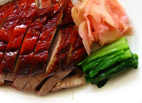
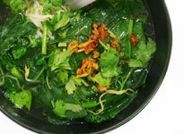

推荐套餐

西湖牛肉
它香淳润滑、鲜美可口，常会提前上席作为润喉开胃的羹汤。西湖牛肉羹也是深受普通老百姓喜爱的食品。Read more...

绿晶汤菜
汤菜，就是指带有较多汤汁的菜肴。汤菜，一般而言，菜是多于汤的，或汤菜各半，或汤略多于菜。Read more...
它香淳润滑、鲜美可口，常会提前上席作为润喉开胃的羹汤。西湖牛肉羹也是深受普通老百姓喜爱的食品。Read more...
汤菜，就是指带有较多汤汁的菜肴。汤菜，一般而言，菜是多于汤的，或汤菜各半，或汤略多于菜。Read more...